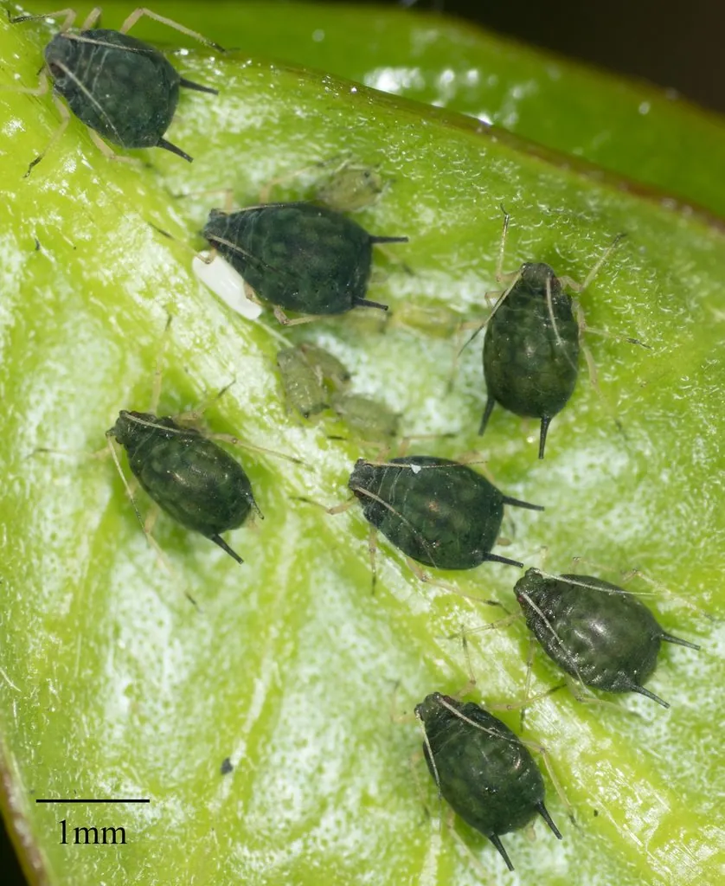

昆虫 · 动物界
棉蚜 Aphis gossypii

棉花、瓜类等作物上的常见蚜虫，体形小而繁殖快，群集在叶背吸食汁液，是农业上重要的害虫和病毒媒介。
- 分类
- 门节肢动物门纲昆虫纲目半翅目科蚜科属蚜属
- 栖息环境
- 棉田、瓜地、菜园和花园，群集于叶背和嫩梢
- 地理分布
- 全球广泛分布，中国各农业区均有
- 保护级别
- 暂无评估
物种志
棉蚜成虫体长 1–2 mm，体色绿色、黄绿或黑绿色；无翅型体形呈梨形，腹管黑色。有翅型在环境恶化或寄主衰老时出现，迁飞到新的寄主上。
棉蚜全球分布，寄主包括棉花、瓜类、蔬菜和观赏植物。它群集在叶背吸食汁液，分泌的蜜露会诱发煤污病，使叶片发黑、影响光合作用，还可能传播植物病毒。棉蚜繁殖力强，可进行孤雌胎生，短时间内就能形成较大种群。田间常见的天敌有瓢虫、草蛉、食蚜蝇和蚜茧蜂，保护这些天敌是防治棉蚜的重要手段。在温室和露地栽培中，棉蚜都是需要长期监测的对象。目前它没有IUCN 的正式评估，中国未将其列入国家重点保护野生动物名录。
形态与习性
- 食性群集叶背刺吸植物汁液
- 体长1–2 mm
- 繁殖可进行孤雌胎生，繁殖速度很快
- 危害蜜露诱发煤污病，还可能传播植物病毒
- 寄主棉花、瓜类、蔬菜和观赏植物
- 天敌瓢虫、草蛉、食蚜蝇和蚜茧蜂
趣味知识
- 棉蚜群集在叶背，吸食汁液后排出的蜜露黏在叶片上。
- 蜜露会诱发煤污病，让叶片变黑、影响光合作用。
- 瓢虫和草蛉是棉蚜的重要天敌，田间保护天敌可减少用药。